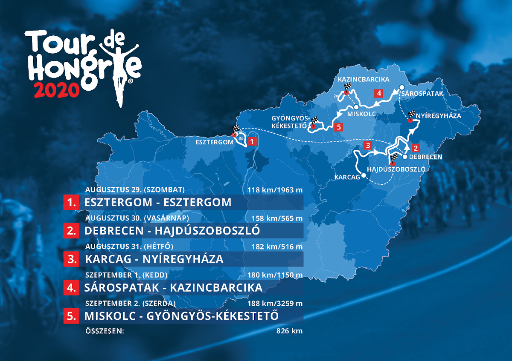

A Tour de Hongrie története
Több mint kilenc évtizeddel ezelőtt, 1925. június 27-én indult útjára először a Tour de Hongrie mezőnye. Az első magyar Tour hajnali négy órakor a budapesti Gellért-szálló elől indult.
Rajt: 1925. június 27. A táv: 510.5 kilométer Körbe a Dunántúlon. Ez bizony ma is 510 és fél kilométer. S ha azt vesszük, hogy akkoriban még nem nagyon volt olyan kísérőautó, amely gond nélkül, egyenletes, negyvenes tempóban le tudta volna nyomni ezt a távot... Jerzsabek Károly, vagy inkább Jerzsabek Karcsi bácsi megtette ugyanezt, ő volt minden idők első magyar Tour-győztese. Ahogyan a korabeli Nemzeti Sport oldalas tudósításaiból kiderül a magyar Tour de France hazánk kerékpáros sportjának történelmében egyedülálló, Németországot megszégyenítő pontossággal és lelkiismeretességgel nemcsak a miting sportbeli részét szervezte meg minden kritikát elbíró alapossággal, hanem tekintettel volt annak propagandaértékére is.
Az első magyar Tour hajnali négy órakor a Gellért-szálló elől indult, s az MTK-s Jerzsabek 22 óra 10 perc alatt teljesítette a Budapest-Szombathely-Győr-Budapest távot.
A kezdet nehéz volt, s a folytatás sem könnyebb, de egészen a második világháborúig minden évben rendeztek körversenyt. Illetve dehogy! Kétszer is szünetet tartottak, először 1928-ban, amikor Magyarországon rendezték meg az országúti világbajnokságot, de szünet volt 1936-ban is, akkor már inkább politikai okokból: a mieinknek kötelező volt remekelni a berlini olimpián, s ezért felmentést kaptak a magyar kerékpárosok. Pedig sosem kérték! Hiszen a Tour de Hongrie-n részt venni már akkor is nagy dolog volt.
A leghosszabb Tour de Hongrie: 1393 kilométer...

Célfotó az 1964-es versenyen
41. Tour de Hongrie
Szervezés
A 41. verseny 2020 augusztus 29-én Esztergoban rajtol, az útja során hat megyét (Komárom-Esztergom, Hajdú-Bihar, Jász-Nagykun-Szolnok, Szabolcs-Szatmár-Bereg, Borsod-Abaúj-Zemplén és Heves), illetve húsz várost (köztük négy megyeszékhelyt, Debrecent, Nyíregyházát, Miskolcot és Egert), összesen ötvenöt települést érint majd. A Tour de Hongrie szervezőbizottsága a pályázó települések közül sportszakmai és turisztikai szempontokat is szem előtt tartva választotta ki azokat a helyszíneket, amelyek a 2020-as Magyar Körverseny programjába kerültek.
Kinek szurkolhatunk?
A versenyen indul a magyar válogatott hat fővel, de más együttesek színeiben is lesznek magyar versenyzők, nyolc csapatban is lehet hazai kerékpáros. Az előzetes rajtlistán van magyar versenyzője a World Teamek közül a Mitchelton-Scottnak (Peák Barnabás), a CCC Teamnek (Valter Attila), a Pro Teamek közül a Team Novo Nordisknak (Kusztor Péter) és az Androni Giocattoli-Sidermecnek (Pelikán János), a kontinentális csapatokban pedig Dina Márton (Kometa-Xstra), Filutás Viktor (Giotti Victoria Palomar), Rózsa Balázs és Szentpéteri András (Team Novák) kaphat helyet, de a csíkszeredai csapatban szerephez juthat egy székely sportoló – Novák Károly Eduárd – is. Dér Zsolt szövetségi kapitány a Karl Ádám (UC Monaco), Dina Dániel (Epronex-BSS Oil Team), Orosz Gergő (Epronex-BSS Oil Team), lstlstekker Zsolt (Epronex-BSS Oil Team), Szatmáry András (Cube-Csömör), Palumby Zsombor (SVS Pro Team) összeállítású válogatottat nevezte a viadalra.
Média
A Tour de Hongrie történetében ötödik alkalommal követhetik majd a nézők élő televíziós közvetítésen keresztül az eseményeket.
A versenysorozat YouTube csatornáján évekre visszamenőleg számos videó megtekinthető az érdeklődők és a nosztalgiára vágyók számára.Társadalmi szerepvállalás
A Tour de Hongrie – ahogyan az elmúlt években is – továbbra is vállalja, hogy fontos ügyek mellé áll. 2020-ban is a közlekedésbiztonság fontosságára igyekszünk felhívni a figyelmet. Szívügyünk a biztonságos közlekedés, különösen a biztonságos kerékpáros közlekedés népszerűsítése, ennek érdekében az elmúlt évek során is igyekeztünk sokat tenni. A kék szívecskés logóval gyakran találkozhatnak a 2020-as Tour de Hongrie során. A Magyar Kerékpáros Körverseny főszervezője, a Vuelta Sportiroda fontosnak tartja, hogy a nemzetközi sporteseményt övező megkülönböztetett figyelmet a társadalmi szerepvállalásban fontos ügyek felé is fordítsa.
Szakaszok
-
Esztergom – Esztergom (118 km)
2020.aug.29. szombatRajt (Esztergom): 11:30
Várható befutó (Esztergom): 14:20 -
Debrecen – Hajdúszoboszló (158 km)
2020.aug.30. vasárnapRajt (Debrecen): 13:00
Várható befutó (Hajdúszoboszló): 16:30 -
Karcag–Nyíregyháza (182 km)
2020.aug.31. hétfőStart (Karcag): 12:30
Várható befutó (Nyíregyháza): 16:30 -
Sárospatak – Kazincbarcika (180 km)
2020.szept.1. keddStart (Sárospatak): 12:00
Várható befutó (Kazincbarcika): 16:20 -
Miskolc – Gyöngyös-Kékestető (188 km)
2020.szept.2. szerdaStart (Miskolc): 11:30
Várható befutó (Gyöngyös-Kékestető): 16:30
Magyar sikerek
A körverseny több mint kilenc évtizedes története során a hazai kerékpárosok szerezték meg a legtöbb győzelmet, tizenkilenc alkalommal nyert magyar versenyző az összetettben. Négyszer osztrák, háromszor szlovák, kétszer német, olasz, illetve ukrán kerekes vitte haza a fődíjat, egy-egy alkalommal győzött Oroszország, Ukrajna, Svájc, Franciaország, Hollandia, Jugoszlávia, Luxemburg, Észtország, Kolumbia vagy Lettország versenyzője.
2020-as győztes: Valter Attila